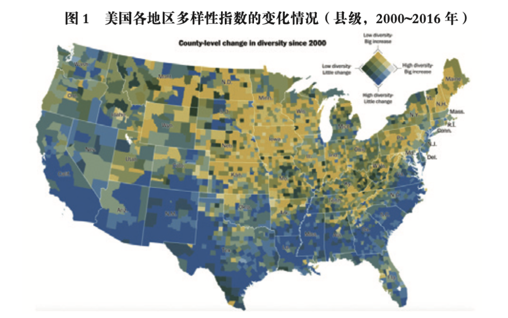
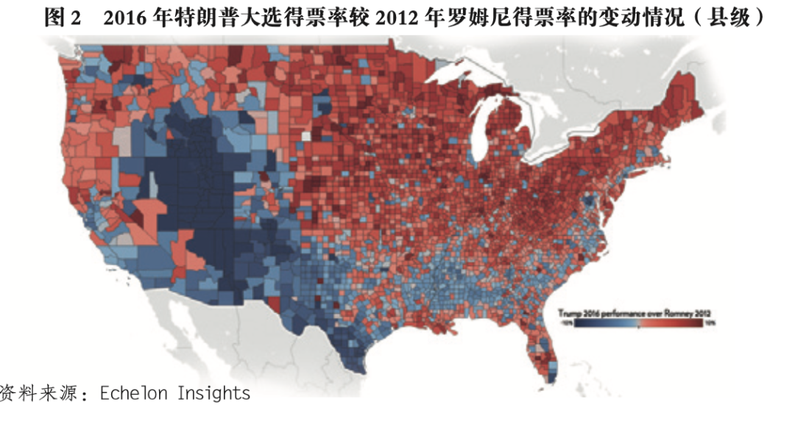

收录于合集
以下文章来源于文化纵横 ，作者蒙克
 文化纵横 .
文化纵横 .
倡导文化重建，共同思想未来，发掘不一样的深度阅读。

老龄化民粹主义：欧美的现实与中国的挑战
作者： 蒙克，清华大学公共管理学院副教授。
来源： 《文化纵横》2022年第2期（4月刊）138-145页。
导读
近年来，民粹化浪潮席卷全球，欧美民粹化、极右倾现象更是达到一个高峰。受此影响，世界政治的不确定性更为凸显。针对这一现象， 本文提供了一个非常重要的视角：社会年龄结构问题。
作者指出，就现象而言， 在美国和欧洲的选票政治中，保守主义投票与较高年龄有明显的正相关关系，而且一个悖论是，投票者反而会支持对自身利益有伤害的政客和政策。 这种吊诡现象的出现，主要有心理和经济两个原因：
从心理上看，很多人有实现梦想的“排队心态” ，高龄人群亲历过高增长年代，曾相信美好生活靠个人奋斗实现，相比于复杂的经济社会变迁， 他们更多体验到的，是外来移民在财富和社会地位上的“插队” ，进而反对那些推动全球化的“帮凶”们。
从经济上看，由于老龄化来临，人工成本上升，西方积极投入自动化的怀抱，制造业中最资深、也是最消耗成本的熟练工最易被替代，而他们的技能可迁移性低，收入和养老都遭受打击，自由派又推动降低各种社会福利，自然会引起不满。从这一角度，可以发现： 由于人口老龄化是一个不可逆转且短期内不会消退的结构性趋势，它所支撑的民粹主义在短期内也不会消退 。但这不代表“老龄化民粹主义”绝对不可调节——如果真正解决这部分人的需求，就可能遏制民粹主义的发展。
本文原载《文化纵横》2022年第2期（4月刊）138-145页，原题为《老龄化民粹主义：欧美的现实与中国的挑战》 ，仅代表作者观点，供诸君参考。
在主流政治学文献中，民粹主义被视为“针对现行政治和知识精英的大众动员”。 既然是反抗现行精英，民粹主义的政治力量，不管左翼还是右翼，都无一例外地把自己标榜为来自体制外的新鲜力量。例如，作为美国共和党激进右翼的唐纳德·特朗普，即便在担任总统期间，也经常在推特上将自己标榜成“华盛顿的外来者”；他的反对者，民主党激进左翼的代表伯尼·桑德斯，同样将自己定位为“白宫的局外人”。 正因为民粹主义者的这种反建制立场，许多学者将他们视为极端右翼或激进右翼。
所有这些标签——无论是“新鲜”“极端”，还是“激进”，都往往让人想到积极进取的年轻人， 而不是已经步入暮年、理应接受现状的老人。 然而，在西方世界最近几次重大政治事件中，老年人却是民粹主义阵营最积极的参与者和支持者。
2016年6月23日英国脱欧公投，有72%的登记选民参与了投票，其中52%的投票者赞成英国退出欧盟。在英国脱欧公投的整个运动过程中，从脱欧公投日程宣布，到脱欧与留欧两大阵营宣传动员，直至脱欧结果确定后仍然连绵不息的辩论，社交媒体都起到了巨大作用，甚至专注于社交媒体影响的剑桥分析公司也因出于政治目的滥用用户数据而遭到起诉。 新信息技术在脱欧事件中扮演的重要角色，让我们误认为脱欧战场的主力，是这些新技术的主要受众和使用者 ——年轻的互联网一代。 然而，若仔细分析最终决定脱欧结果的公投数据，我们会发现老年选民的抉择才是关键： 与18~24岁和25~34岁两个青年人组别的低投票率不同（分别仅有36%和58%），临近退休的55~64岁组和已经退休的65岁以上组的投票率分别高达81%和83%，青年人的高社交媒体活跃度似乎并没有同等转化为实际的投票参与率，而后者才是与政治结果直接相关的决定因素。如果我们分析更为直接的决定因素——实际的投票倾向，会看到18~24岁组别中，支持脱欧的比重仅有29%，25~49岁中脱欧支持者的比重也未过半（46%），但55~64岁组和65岁以上组则高达60%和64%。 总体而言，无论是投票率，还是脱欧立场的支持率，均与年龄呈现高度正相关的态势。
老龄选民的高投票率比较容易理解。研究选举的政治学文献早就发现，不管是日常政府换届选举，还是特殊时刻的全民公投， 老年人的投票率总是比年轻人高，这与前者更习惯于传统的政治参与模式，而后者有更多政治参与渠道（如示威和互联网讨论、请愿）有关。正由于老年选民的这一特点，他们才成为西方政党的主要争取对象，成为政坛举足轻重的“银发力量”（grey power）。
但是，受关注、拉拢是一回事，真正的支持则是另一回事。 英国的老年人为何会支持脱欧呢？这个现象让人困惑。 首先，欧洲一体化是“二战”后欧洲层面展开的最重大的政治事业，它直接来自无数欧洲人浴血奋战击败纳粹德国后，为维护来之不易的和平成果、避免欧洲再次成为世界大战策源地的理想和愿望。按理说，这些记忆对于老年人来说应该更为鲜活和强烈，可如今英国的老年人却愿意抛弃这项与自己的亲身经验直接相关的事业，着实让人费解。其次，欧洲一体化以及整个全球化进程，其实给英国老年人带来了极大的物质好处：进口于意大利的物美价廉的新鲜食材，东欧和牙买加移民所担任的医院看护，来自法兰克福、香港等金融中心的养老基金投资机会，西班牙温暖海滩旁的疗养胜地……哪个不是欧洲一体化和经济全球化的产物？显然， 基于物质利益来解释老年人民粹主义倾向的思路是不完备的，我们还需要考察其它的社会心理因素。
也许有人会反驳，说老年人反对欧盟仅是个英国现象，毕竟英国历来都有强烈的疑欧倾向。我们可以考察欧洲层面的数据。国际社会调查（International Social Survey Programme）在2013年向16个欧盟成员国的21507名受访人提出了一个假设性问题：“假若今天有一场公投，要决定你的国家是否留在欧盟内，你是赞成还是反对？”结果显示，18~24岁的受访人赞成自己国家脱欧的比重仅有23.59%，但随着受访人年龄的增长，支持脱欧的比重逐渐增加：在60~64岁和65岁以上年龄组，分别有35.7%和33.07%支持本国脱离欧盟。事实上， 在个体层面，在控制住其他一系列的人口学变量、社会经济变量（如收入和教育）及意识形态立场变量之后，受访人支持脱欧的可能性仍与其年龄高度正相关。 因此， 老年人倾向于反对欧盟的现象并不局限于英国，而是一个存在于欧洲层面的普遍现象。
我们再看美国。 同样在2016年，美国的民粹主义力量也赢得了标志性胜利，即特朗普当选为美国第三十五任总统。 与英国脱欧的例子类似，老年人在特朗普的胜选中也起到重要作用。 如果考察分年龄段的投票率，我们可以看到，在2016年的美国总统大选中，60岁以上和45~59岁两个组的投票率分别高达71.4%和66.2%，均高于30~44岁（56.9%）和18~29岁（43.4%）年龄组。也就是说，年纪越大，投票率越高。同样，在对特朗普的支持率上，我们也能看到类似的关系：在18~29岁和30~44岁两个年龄段的投票选民中，支持特朗普的仅占37%和42%；而在45~64岁和65岁以上的投票者中，特朗普的支持者占比均已过半，达到了53%。换言之，老年选民的支持是特朗普上台的重要社会基础。
01
老龄化民粹主义产生的社会心理机制：重回传统价值
要解释老年选民自身的民粹主义立场，例如脱欧主张，我们不妨先从一个容易想到的解释出发： 欧洲一体化所带来的机会和益处主要由年轻人享有，而这些对于老年人则意义不大，因此后者自然不会如前者那样支持留在欧盟。 的确，欧盟保证的“四大自由”（产品流动自由、人员流动自由、服务提供自由和资本流动自由）支撑了欧洲内部的共同市场，流通的便利将这片广袤而多样的大陆所能够提供的教育、工作乃至娱乐机会充分呈现在英国年轻人面前，“欧洲之星”列车和廉价的航空将他们载往巴塞罗那、罗马、柏林等欧洲中心，使其充分享受到欧洲一体化果实的甘甜。但是，难道老年人就无法享受这些益处了吗？显然不是。事实上，英国法律规定，英国公民在退休后，有权在世界上任何地方领到自己的国家养老金。在这样的保障之下，借助欧盟“四大自由”带来的便利，许多英国退休者纷纷前往欧盟其他国家度假、疗养，甚至购置房产并在当地生活。这就是为什么我们看到，气候温暖的西班牙、法国和意大利，以及医疗发达的德国，成为拥有英国退休者人数最多的欧洲大陆国家。但在英国脱欧之后，欧洲议会要求：只有在180天内在欧盟内部停留不超过90天的英国人才能免除签证。这给打算长期居留欧盟国家的英国退休者造成较大不便。但即便这样，也没有阻止如此多的英国退休者在脱欧公投中投下赞成票。为何英国老年人在享有欧盟一系列好处时，还会支持脱欧阵营的立场呢？
事实上，这种享有欧盟好处的英国老年人反而支持脱欧的情况， 是民粹主义现象中的一个普遍悖论：人们经常会支持一些民粹主义政客，但这些政客的政策立场其实与他们的切身利益相矛盾。 例如，在研究美国南部的民粹主义——茶党运动时，美国社会学家阿莉·霍赫希尔德发现，在路易斯安那州的莱克查尔斯，当地贫困丛生，环境污染问题严重，可那儿的选民长期支持的却是一位主张大幅削减福利和环保预算的共和党右翼候选人。如何解释这种自身利益与所支持的政策之间的错位？选民信息的不完备也许是一个原因，毕竟不是每个老年人都能预料到英国脱欧后欧盟方面的政策变动。但这个观点也许能解释脱欧公投这种单次博弈，却难以解释发生在类似莱克查尔斯这种地方层面上的多次博弈：经过频繁的一次次地方选举，难道莱克查尔斯的选民还不清楚这位茶党政客的真实立场吗？
为解释以上悖论，霍赫希尔德经过对美国南部各地茶党支持者长时间的观察和访谈，总结出一套超越我们日常习惯的利益分析视角，而强调选民主观心理认知的观点。这一观点对我们理解从茶党到今天的民粹主义和逆全球化的支持者（包括其中的老年人）的心态也能提供启示。 霍赫希尔德将其观点总结为一幅美国普通人的心灵图景，在这个图景中，每个美国人的一生都像是在排队，目标是处于前方队伍尽头的“美国梦”的实现。 在“二战”后美国发展的黄金岁月里，他们的父母和他们自己都笃信，只要一生努力，老实奋斗打拼，就一定能实现那个美国梦。可是，在20世纪80年代之后，全球化加速，外来风险增多，这种稳定的预期开始动摇。这些外来风险的来源很多，包括国际贸易（例如来自东亚赶超经济体的竞争）和国际金融（如金融去管制化导致的全球金融波动）等等。但是，这些深层次结构性因素在日常生活中并不是显而易见或易于理解的。 对普通人来说，他们能亲身感受到的外来冲击，其实是国际移民的涌入。 大量不同肤色、不同文化的移民的到来，改变了他们接触的生活环境。更重要的是，在美国鼓励合法移民的政策影响下，很多移民成功实现了社会和经济的融入以及社会阶层的向上流动。但是， 这种融入在许多美国白人看来，无异于一种在排队实现美国梦进程中的“插队”行为 ——为何这些新来的外来者，能够获得与已经耕耘数代的白人相似甚至更高的经济和社会成就？在这些美国人看来，这些移民之所以能实现这些成就，一定是有人在帮助他们，给了他们不公平的竞争优势。 那么究竟谁是移民的“帮凶”呢？正是那些拥抱全球主义、主张族裔间平权的美国政治、智识精英。 没有他们对少数族裔的政策支持，后者不可能在追求“美国梦”的社会竞争中战胜白人。 这种不公正感和老实人被欺负的委屈感，将他们推向了排外的民粹主义阵营。
霍赫希尔德描摹了一幅不同于我们日常认知的、关于民粹主义和逆全球化运动支持者的画像： 这些人对自己处境的归因也许偏狭，但他们并不是我们通常所想象的对全球化赢家心怀嫉妒的失败者。 事实上，他们多是一辈子老实工作、笃信传统美国价值观的普通人。 他们相信，要实现美国梦，人应该靠自己的奋斗，而不是仰赖政府的帮助，后者既不公正，也不道德。然而，在现实中的美国，就是有一个干预蔓延至生活方方面面的大政府，并且平权行动还给予了包括移民在内的少数族裔各种优惠政策。 而这一切，都是在信奉平等的美国建制派自由主义精英的主导下发生的。于是，这部分相信个人奋斗和小政府等传统价值观的美国人，自然很容易就被民粹主义者动员，成为反建制的政治力量。 这股力量的本质，是追求重回传统的美国价值观。 美国民粹主义的支持者并不指望通过争取政府干预实现具体的利益诉求，这就是为什么他们常常会支持一些政策立场貌似与其物质利益相悖的政客。他们相信，只要没有了政府的偏袒性政策，重回公平的市场，他们就能依靠自己过上好的生活。
将上述分析应用于老龄群体，我们就能理解为何年龄越大的人越可能支持民粹主义者。 首先，年纪越大，就越可能真实地在那个“往昔的美国”生活过，亲身体验过美国的传统生活方式，从而也就更加认同美国“小政府，大市场”的传统价值观。其次，年龄越大，在“往昔”生活得越久，全球化加速后带来的新变化和异质性对其冲击就越大。最后，年岁越高，就意味着在“排队实现美国梦”的队伍中排得时间越长，于是被人“插队”后感到的委屈和不满也就越多。 上述三者，就是老龄化催生对民粹主义支持的社会心理机制。
可见，这一机制的作用核心在于变化： 在一个族群异质性历来很高的地区，老年人未必会支持反建制的民粹主义，这种异质性是他们一直以来都在经历的，不会带来陌生感，也就不会催生重回熟悉往昔的诉求；只有在一个族群异质性过去并不高，但在最近突然升高的地方，对故土的陌生感和被享受政府优待的少数族裔突然“插队”的委屈感才会更强，这样的老年人才会更加支持民粹主义。
这就是为什么在2016年美国大选中，特朗普支持率提高的空间分布，会与各地区多样性指数（diversity index）的上升程度高度相关。所谓多样性指数，指的是在美国一个地区随机抽取两个人，他们属于不同种族或族群的可能性。图1展示了在2016年，美国各县的多样性指数与2000年相比的上升程度。不难看出，多样性指数上升程度越高的县，在2016年大选中对共和党候选人（特朗普）的支持率的上升程度（与2012年相比）就越高（图2）。例如，在迈阿密这样族群多样性一直很高的地区，特朗普并没有比上一届大选的共和党候选人收获更多选票；反而是威斯康星等多样性在近年来上升很快的地方，与2012年大选时相比，在2016年大选中给予了共和党候选人（特朗普）更多的支持。


上述分析虽然聚焦于美国，但揭示的政治心理机制对于英国老年人在脱欧议题上的态度也具有解释力。 在英国走向公投的过程中，脱欧阵营的核心口号就是“夺回控制”（Take Back Control）。这个口号把握住了相当一部分英国老年人的心态：只有把对这个国家的控制权从布鲁塞尔（欧盟总部所在地）那里夺回来，英国才能独立自主地重归美好的传统和往昔。正如一位英国退休者在解释自己为何在公投中支持脱欧时所说：“脱欧是件好事……因为我真心相信英国应该就像英国（Britain should stay Britain），而且国家应该由我们自己来管（run by ourselves）。”所谓“像英国”，其实指的是“像过去的英国”——运用独立的政策，自主控制国际货物、资本和移民向英国的流入，而不会由于欧盟的压力而变得像欧洲其他国家。至于加入欧盟带来的益处， 就像美国老年人认为大政府带来的好处根本不应提倡一样，这些英国老年人认为：一个国家的发展与繁荣，只能来自独立自主前提下的开拓与进取，而非欧盟那样的官僚国际组织的所谓帮助。 只要英国重拾过去的自主和活力，它在长期就将释放更大的发展潜能，从而弥补脱离欧盟所造成的短期阵痛。
02
老龄化民粹主义产生的政治经济机制：机器替代技能
带来老龄化民粹主义的除了前述社会心理机制，还有客观物质利益决定的政治经济机制。与已经退出劳动力市场的退休者不同，年届中年（50~59岁）和临近退休（60~64岁）的人群仍处于劳动力市场之中，其对民粹主义阵营的支持，不仅源自前文所讨论的社会心理因素，还出于与劳动参与和收入相关的经济利益考量。 我们需要联系人口老龄化的重要社会经济后果——工业自动化，才能理解这样的经济考虑。
所谓“工业自动化”，指的是在经济生产过程中采用机器人的趋势。工业机器人技术之所以得到应用，一种重要的社会需求就是人口老龄化导致的劳动力市场变动。目前应用工业机器人最积极的国家，大都是人口老龄化问题严重的国家，例如日本、韩国、德国等。原因不难理解：人口老龄化意指65岁以上人口占比的提高，这往往意味着劳动年龄人口供给的下降与劳动力价格的上升。于是，在更高的劳动力价格的压力下，企业和社会便有更大激励采用工业机器人以替代昂贵的人工。有研究发现， 人口老龄化程度能够解释各国在工业机器人应用程度上差异的35%。
人口老龄化促使各国采取工业自动化以机器替代人力，那么是哪个生产部门的哪部分人群被替代了呢？机器人的大规模应用仍发生在制造业。而在制造业从业者中，最可能被替代的是45~55岁的中年工人。这并不是因为这部分劳动者不重要，恰恰相反，这部分工人经验丰富，体力也能胜任制造业中的机械性劳作。但是，由于他们工作年资长，从之前的劳资关系中附带而来的福利待遇高，因此他们的劳动力价格昂贵。这使得雇主有极大的激励引进相应的自动化技术将其替代。
这种失业风险给该部分制造业工人造成极大的威胁，因为他们拥有的是可迁移性较低的专有型技能， 如对某些特种车床进行编程和操作以生产某些专用零件。这些技能可能只适用于某些行业或领域，可迁移性较低，劳动者因此被“套牢”在某个领域。同时，这种因技能特质而来的再就业难度，更会被高龄所导致的技能更新困难放大。因此，在工业自动化的阴影下，失业对于中年和临近退休的制造业工人意味着尤为严重的后果。 他们一旦下岗，不仅会陷入长期失业、失去收入的困境，更会直接打断自己为退休后生活所做的准备（如对个人养老金退休账户进行的资金积累）。
所有这些后果，若在一个完善的社会保障体系内，其实都还有办法应对，但 从20世纪80年代开始抬头的西方新自由主义政治力量，却在控制政府赤字的名义下不断削减福利支出，甚至逐步拆解为劳动者提供社会安全的一系列劳动力市场制度（如就业保护和失业福利）。 同时，人口老龄化本身也提高了老龄抚养比，让此前形成的养老金系统在财务上变得不可持续，迫使政府对养老金系统进行改革，不断降低养老金的替代率。
不难想象，高龄制造业工人由于对新自由主义精英们充满不满和愤怒，很容易就被反新自由主义建制派精英的民粹主义者所吸引甚至利用，成为后者的支持者。 这些民粹主义势力，一方面极力渲染新自由主义政治经济体制对普通人利益的忽视甚至侵害，一方面尽可能地将笼罩在劳动者身上的社会风险（如失业和贫困风险）归咎于经济全球化（如来自中国的所谓“不公平竞争”），从而掩盖了这些风险的真正源头其实是发达国家内部的结构变迁（如人口老龄化推动下的工业自动化）。 正是这种既利用人民的真实不满，但又不直面问题根源的行为，使得西方民粹主义势力在发展壮大的同时，却又无法从根本上解决实际问题。
03
结语
当代西方民粹主义的成因有很多，本文聚焦一个尚未得到深入研究的因素——人口老龄化。明确人口老龄化推动当代西方民粹主义的主要机制，能为我们判断民粹主义的发展趋势带来重要启示。 由于人口老龄化是一个不可逆转且短期内不会消退的结构性趋势，它所支撑的民粹主义在短时间内也不会消退。 换言之，老龄化民粹主义力量和相关的逆全球化倾向并不会因为政府换届、政党更迭或领导变动而改变；恰恰相反，老龄化民粹主义反过来将选择符合自身立场的政府、领导和政策。但是，这并不意味着西方国家的政策演变不会影响民粹主义力量。正如老龄化民粹主义产生的政治经济机制所揭示的，中年以上至退休年龄的制造业工人被机器替代的风险将其推向了民粹主义阵营。 但如果西方政府提供更好的就业保障和社会福利，帮助这部分工人应对这一风险，那么就能相应降低经由这一机制所产生的对民粹主义的支持。
排版 | 王慧瑜
文章来源于《文化纵横》，文章观点不代表本平台观点